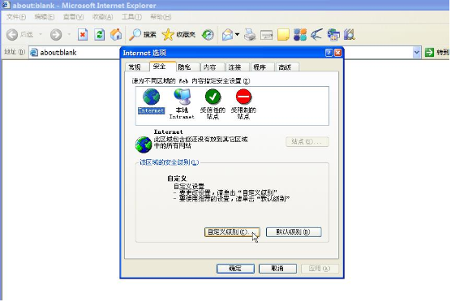
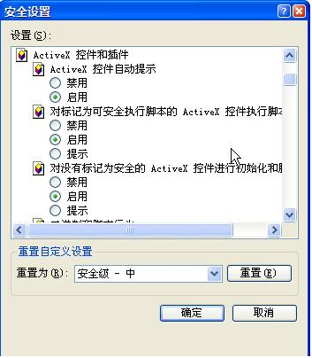
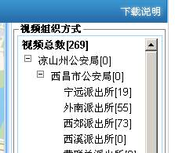
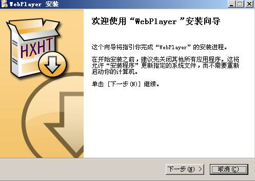
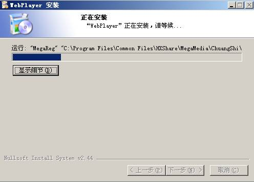
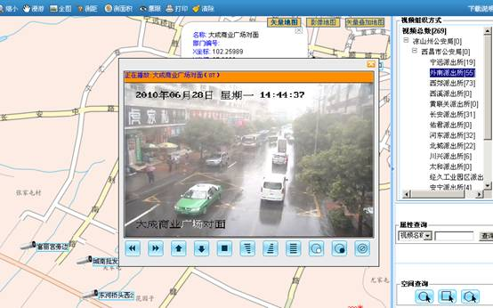

视频IE设置
1.打开IE,选择“Internet选项”,如图一

2.选择“安全"选项卡的“Internet"选项,如图二所示

3.选择”自定义级别“，启用所有关于"ActiveX”控件相关选项，如图三所示

4.安装视频厂商的相关ocx控件或安装程序，以下示例为控件安装步骤:
点击下载说明

选择“保存”，将控件保存到本地，然后关闭IE，运行安装控件，则弹出视频控件界面，如下图所示

点击“下一步”，接着选择下一步，进行组件安装；

安装完成后完后，直接点击相关视频点即可观看视频,如下图所示:
